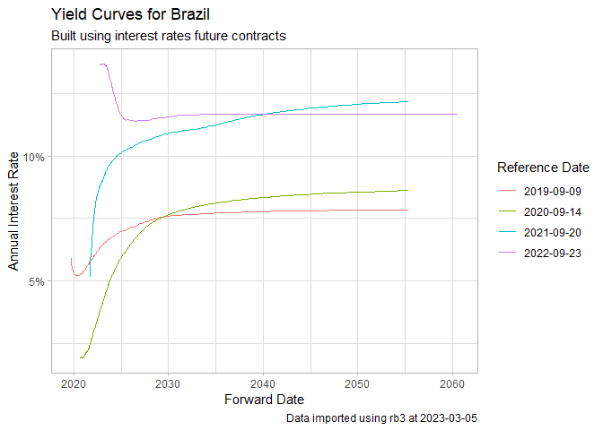

B3 is the main financial exchange in Brazil, offering support and access to trading systems for equity and fixed income markets. In its website you can find a vast number of datasets regarding prices and transactions for contracts available for trading at these markets.
Package rb3 facilitates downloading and reading these datasets from B3, making it easy to consume it in R in a structured way.
Documentation
The documentation is available in its pkgdown page, where articles (vignettes) with real applications can be found.
Installation
install.packages("rb3")
# github (Development branch)
if (!require(devtools)) install.packages("devtools")
devtools::install_github("wilsonfreitas/rb3")Examples
Yield curve
Download and use historical yield curve data with yc_get.
library(rb3)
library(ggplot2)
library(stringr)
df_yc <- yc_mget(
first_date = Sys.Date() - 255 * 5,
last_date = Sys.Date(),
by = 255
)
#> Skipping download - using cached version
#> Skipping download - using cached version
#> Skipping download - using cached version
#> Skipping download - using cached version
p <- ggplot(
df_yc,
aes(
x = forward_date,
y = r_252,
group = refdate,
color = factor(refdate)
)
) +
geom_line() +
labs(
title = "Yield Curves for Brazil",
subtitle = "Built using interest rates future contracts",
caption = str_glue("Data imported using rb3 at {Sys.Date()}"),
x = "Forward Date",
y = "Annual Interest Rate",
color = "Reference Date"
) +
theme_light() +
scale_y_continuous(labels = scales::percent)
print(p)
Futures prices
Get settlement future prices with futures_get.
library(rb3)
library(dplyr)
df <- futures_mget(
first_date = "2022-04-01",
last_date = "2022-04-29",
by = 5
)
glimpse(
df |>
filter(commodity == "DI1")
)
#> Rows: 153
#> Columns: 8
#> $ refdate <date> 2022-04-01, 2022-04-01, 2022-04-01, 2022-04-01, 2022-04-~
#> $ commodity <chr> "DI1", "DI1", "DI1", "DI1", "DI1", "DI1", "DI1", "DI1", "~
#> $ maturity_code <chr> "J22", "K22", "M22", "N22", "Q22", "U22", "V22", "X22", "~
#> $ symbol <chr> "DI1J22", "DI1K22", "DI1M22", "DI1N22", "DI1Q22", "DI1U22~
#> $ price_previous <dbl> 99999.99, 99172.50, 98159.27, 97181.87, 96199.14, 95137.6~
#> $ price <dbl> 100000.00, 99172.31, 98160.23, 97185.43, 96210.42, 95159.~
#> $ change <dbl> 0.01, -0.19, 0.96, 3.56, 11.28, 21.61, 34.93, 48.85, 57.3~
#> $ settlement_value <dbl> 0.01, 0.19, 0.96, 3.56, 11.28, 21.61, 34.93, 48.85, 57.32~Equity data
Equity closing data (without ANY price adjustments) is available thru cotahist_get.
library(rb3)
library(bizdays)
# fix for ssl error (only in linux)
if (Sys.info()["sysname"] == "Linux") {
httr::set_config(
httr::config(ssl_verifypeer = FALSE)
)
}
date <- preceding(Sys.Date() - 1, "Brazil/ANBIMA") # last business day
ch <- cotahist_get(date, "daily")
#> Skipping download - using cached version
glimpse(
cotahist_equity_get(ch)
)
#> Rows: 369
#> Columns: 13
#> $ refdate <date> 2022-05-10, 2022-05-10, 2022-05-10, 2022-05-10, 202~
#> $ symbol <chr> "AALR3", "ABCB4", "ABEV3", "AERI3", "AESB3", "AFLT3"~
#> $ open <dbl> 19.68, 15.91, 13.81, 4.15, 10.75, 10.14, 33.21, 8.70~
#> $ high <dbl> 19.85, 15.97, 14.03, 4.18, 10.95, 10.18, 33.77, 9.18~
#> $ low <dbl> 19.55, 15.50, 13.72, 3.90, 10.70, 10.14, 32.51, 8.25~
#> $ close <dbl> 19.82, 15.60, 13.73, 4.02, 10.92, 10.18, 32.70, 9.18~
#> $ average <dbl> 19.76, 15.63, 13.80, 4.02, 10.81, 10.16, 32.98, 8.56~
#> $ best_bid <dbl> 19.81, 15.60, 13.73, 4.00, 10.90, 9.17, 32.67, 8.75,~
#> $ best_ask <dbl> 19.82, 15.61, 13.75, 4.03, 10.92, 9.94, 32.71, 9.38,~
#> $ volume <dbl> 6205624, 14542334, 225182142, 7398951, 11216988, 203~
#> $ traded_contracts <int> 314000, 929900, 16310700, 1840400, 1037000, 200, 586~
#> $ transactions_quantity <int> 1447, 5767, 19115, 6228, 2764, 2, 3084, 540, 294, 10~
#> $ distribution_id <int> 102, 140, 125, 101, 102, 119, 112, 101, 103, 231, 23~Funds data
glimpse(
cotahist_funds_get(ch)
)
#> Rows: 360
#> Columns: 13
#> $ refdate <date> 2022-05-10, 2022-05-10, 2022-05-10, 2022-05-10, 202~
#> $ symbol <chr> "BZLI11", "ABCP11", "AFHI11", "AFOF11", "AIEC11", "A~
#> $ open <dbl> 17.71, 72.05, 98.81, 89.59, 78.00, 930.00, 114.56, 1~
#> $ high <dbl> 17.71, 73.76, 98.85, 89.60, 79.47, 950.09, 115.97, 1~
#> $ low <dbl> 17.71, 72.05, 98.12, 88.40, 77.45, 930.00, 114.56, 1~
#> $ close <dbl> 17.71, 72.95, 98.55, 89.22, 78.99, 950.00, 115.14, 1~
#> $ average <dbl> 17.71, 72.67, 98.56, 88.95, 78.05, 941.19, 115.04, 1~
#> $ best_bid <dbl> 16.90, 72.95, 98.36, 88.52, 78.34, 935.01, 115.14, 1~
#> $ best_ask <dbl> 17.71, 73.00, 98.55, 89.22, 78.99, 958.50, 115.49, 1~
#> $ volume <dbl> 35.42, 62425.31, 967917.16, 134407.56, 581553.96, 12~
#> $ traded_contracts <int> 2, 859, 9820, 1511, 7451, 133, 8554, 188, 18201, 129~
#> $ transactions_quantity <int> 1, 165, 679, 89, 921, 93, 959, 55, 3593, 176, 4, 679~
#> $ distribution_id <int> 100, 314, 113, 113, 120, 250, 154, 105, 126, 131, 13~BDRs data
glimpse(
cotahist_bdrs_get(ch)
)
#> Rows: 525
#> Columns: 13
#> $ refdate <date> 2022-05-10, 2022-05-10, 2022-05-10, 2022-05-10, 202~
#> $ symbol <chr> "A1AP34", "A1BB34", "A1CR34", "A1DM34", "A1EG34", "A~
#> $ open <dbl> 65.07, 36.45, 64.75, 440.00, 26.46, 261.00, 100.20, ~
#> $ high <dbl> 65.07, 36.66, 64.75, 444.40, 26.61, 261.00, 102.75, ~
#> $ low <dbl> 65.07, 36.45, 64.26, 440.00, 26.01, 261.00, 100.20, ~
#> $ close <dbl> 65.07, 36.66, 64.43, 444.40, 26.27, 261.00, 102.75, ~
#> $ average <dbl> 65.07, 36.65, 64.42, 440.73, 26.27, 261.00, 102.73, ~
#> $ best_bid <dbl> 0.00, 35.00, 54.00, 0.00, 26.06, 0.00, 0.00, 0.00, 2~
#> $ best_ask <dbl> 65.07, 36.66, 64.43, 0.00, 26.27, 0.00, 102.75, 0.00~
#> $ volume <dbl> 18870.30, 64044.71, 96902.53, 2644.40, 9930.17, 1800~
#> $ traded_contracts <int> 290, 1747, 1504, 6, 378, 69, 251, 3, 16280, 3831, 14~
#> $ transactions_quantity <int> 1, 5, 3, 2, 6, 1, 2, 2, 9, 2, 1, 4, 4, 1, 7, 129, 4,~
#> $ distribution_id <int> 110, 102, 106, 109, 102, 110, 110, 109, 106, 101, 10~Equity options
glimpse(
cotahist_equity_options_get(ch)
)
#> Rows: 5,286
#> Columns: 14
#> $ refdate <date> 2022-05-10, 2022-05-10, 2022-05-10, 2022-05-10, 202~
#> $ symbol <chr> "ABCBE175", "ABCBR160", "ABEVA150", "ABEVA900", "ABE~
#> $ type <fct> Call, Put, Call, Call, Call, Call, Call, Call, Call,~
#> $ strike <dbl> 17.23, 15.73, 15.00, 9.00, 11.54, 13.04, 13.29, 13.5~
#> $ maturity_date <date> 2022-05-20, 2022-06-17, 2024-01-19, 2024-01-19, 202~
#> $ open <dbl> 0.10, 0.40, 3.00, 6.60, 2.50, 0.92, 0.85, 0.48, 0.41~
#> $ high <dbl> 0.10, 0.40, 3.00, 6.60, 2.50, 0.92, 0.85, 0.64, 0.55~
#> $ low <dbl> 0.04, 0.40, 3.00, 6.60, 2.50, 0.85, 0.68, 0.43, 0.29~
#> $ close <dbl> 0.04, 0.40, 3.00, 6.60, 2.50, 0.88, 0.68, 0.44, 0.55~
#> $ average <dbl> 0.07, 0.40, 3.00, 6.60, 2.50, 0.90, 0.83, 0.50, 0.33~
#> $ volume <dbl> 14, 6000, 1200, 9900, 9500, 118168, 8976, 112388, 50~
#> $ traded_contracts <int> 200, 15000, 400, 1500, 3800, 130400, 10700, 223400, ~
#> $ transactions_quantity <int> 2, 1, 1, 1, 1, 6, 5, 77, 21, 199, 63, 257, 115, 153,~
#> $ distribution_id <int> 139, 139, 125, 125, 125, 125, 125, 125, 125, 125, 12~